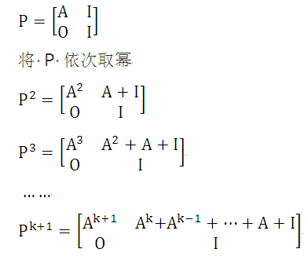
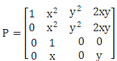
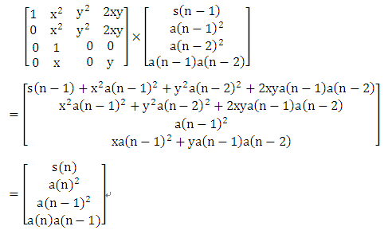
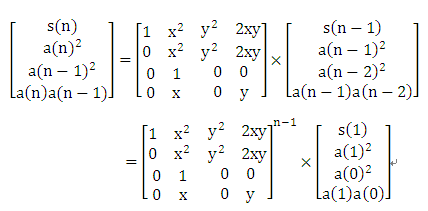
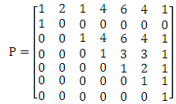
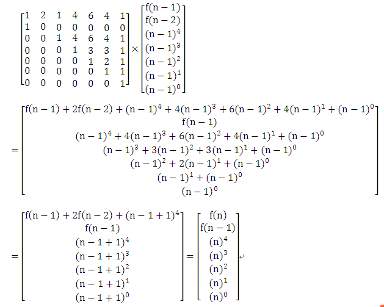
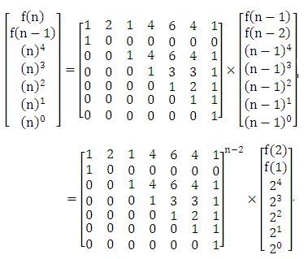

在应用矩阵的快速幂运算解决一些递推问题时，由于递推式不是一个直接的线性关系，这样不能直接简单地得到用于运算的矩阵，需要进行适当的构造。下面先看一道POJ 上的经典题目。
【例1】Matrix Power Series （POJ 3233）
Description
Given a n × n matrix A and a positive integer k, find the sum S = A + A2 + A3 + … + Ak.
Input
The input contains exactly one test case. The first line of input contains three positive integers n (n ≤ 30), k (k ≤ 109) and m (m < 104). Then follow n lines each containing n nonnegative integers below 32,768, giving A’s elements in row-major order.
Output
Output the elements of S modulo m in the same way as A is given.
Sample Input
2 2 4
0 1
1 1
Sample Output
1 2
2 3
（1）编程思路。
题目的意思是：输入n*n矩阵A，求S=A + A^2 + A^3 + … + A^k的结果（两个矩阵相加就是对应位置分别相加），输出的数据mod m。
显然不能将各个矩阵的2~k次幂均计算出来，会超时的。
可以构造出一个2n*2n的矩阵P，采用分块的方法表示如下，，其中 A 为原矩阵，I 为单位矩阵，O 为0矩阵。

我们发现 Pk+1 右上角那一个分块n*n矩阵正是要求的 A+A2+...+Ak 。
于是我们构造出 P矩阵，然后对它求矩阵快速幂，最后减去一个单位阵即可得到结果。
（2）源程序。
#include <stdio.h>
#include <string.h>
struct Matrix
{
int mat[61][61]; // 存储矩阵中各元素
};
Matrix matMul(Matrix a ,Matrix b,int n,int m)
{
Matrix c;
memset(c.mat,0,sizeof(c.mat));
int i,j,k;
for (i = 1; i<=n ; i++)
for (j=1 ;j<=n ; j++)
for (k = 1 ;k<=n ;k++)
{
c.mat[i][j]=(c.mat[i][j]+a.mat[i][k] * b.mat[k][j]) % m;
}
return c;
}
Matrix quickMatPow(Matrix a ,int n,int b,int m) // n阶矩阵a快速b次幂
{
Matrix c;
memset(c.mat ,0 ,sizeof(c.mat));
int i;
for (i = 1 ;i <= n ;i++)
c.mat[i][i] = 1;
while (b!=0)
{
if (b & 1)
c = matMul(c ,a ,n,m); // c=c*a;
a = matMul(a ,a ,n,m); // a=a*a
b /= 2;
}
return c;
}
int main()
{
int n,k,m,i,j;
Matrix p ;
scanf("%d%d%d",&n,&k,&m);
memset(p.mat,0,sizeof(p.mat));
for (i=1;i<=n;i++)
for (j=1;j<=n;j++)
scanf("%d",&p.mat[i][j]);
for (i=1;i<=n;i++)
{
p.mat[i][n+i]=1; // 右上角的单位矩阵
p.mat[n+i][n+i]=1; // 右下角的单位矩阵
}
p = quickMatPow(p,2*n,k+1,m);
for (i=1;i<=n;i++)
p.mat[i][i+n]--; // 减去单位矩阵
for (i=1;i<=n;i++)
{
for (j=n+1;j<=2*n;j++)
printf("%d ",(p.mat[i][j]+m)%m);
printf("\n");
}
return 0;
}
由于构造的P矩阵中含有大量的0元素，因此可以考虑在矩阵相乘时进行优化，优化的方法是如果是0元素就不进行对应元素运算。优化后的矩阵相乘函数如下：
Matrix matMul(Matrix a ,Matrix b,int n,int m)
{
Matrix c;
memset(c.mat,0,sizeof(c.mat));
int i,j,k;
for (k = 1; k<=n ; k++)
for (i=1 ;i<=n ; i++)
if (a.mat[i][k]!=0)
for (j = 1 ;j<=n ;j++)
c.mat[i][j] = (c.mat[i][j] + a.mat[i][k] * b.mat[k][j]) % m;
return c;
}
【例2】另类斐波那契数列。
已知斐波那契数列为：F(0) = 1，F(1) = 1，F(N) = F(N - 1) + F(N - 2) (N >= 2)。现定义一个新的类斐波那契数列： A(0) = 1，A(1) = 1，A(N) = X * A(N - 1) + Y * A(N - 2) (N >= 2)。
输入x、y和n，求新定义数列的前n项的平方和，即S(n)=A(0)^2+A(1)^2+....+A(n)^2。
（1）编程思路。
根据数列递推式不能直观地得到用于递推的矩阵，需要进行分析、构造。
因为 S[ n ] = S[ n -1 ] + A[n]^2
A[n]=X*A[n-1]+Y*A[n-2]
所以 S[n]=S[n-1]+X^2*A[n-1]^2+Y^2*A[n-2]^2+2XYA[n-1]*A[n-2]
等式的右边有四项，有变化的是S[ n-1]，A[n-1]^2，A[n-2]^2，A[n-1]*A[n-2]，各自的系数1，x^2，Y^2，2XY一经输入就确定了，不会再变化。
而有变化的四项S[ n-1]，A[n-1]^2，A[n-2]^2，A[n-1]*A[n-2]向前推进一步应该为
S[ n]，A[n]^2，A[n-1]^2，A[n]*A[n-1]。
这样，可以构造一个4*4的矩阵P。

为什么这样构造呢？是因为 （仔细体会一下哟!）

构造好矩阵P后，就可以采用矩阵快速幂运算求S(n)了。

（2）源程序。
#include <stdio.h>
#include <string.h>
#define MOD 10007
struct Matrix
{
int mat[5][5]; // 存储矩阵中各元素
};
Matrix matMul(Matrix a ,Matrix b,int n)
{
Matrix c;
memset(c.mat,0,sizeof(c.mat));
int i,j,k;
for (k = 1; k<=n ; k++)
for (i=1 ;i<=n ; i++)
if (a.mat[i][k]!=0)
for (j = 1 ;j<=n ;j++)
c.mat[i][j] = (c.mat[i][j] + a.mat[i][k] * b.mat[k][j]) % MOD;
return c;
}
Matrix quickMatPow(Matrix a ,int n,int b) // n阶矩阵a快速b次幂
{
Matrix c;
memset(c.mat ,0 ,sizeof(c.mat));
int i;
for (i = 1 ;i <= n ;i++)
c.mat[i][i] = 1;
while (b!=0)
{
if (b & 1)
c = matMul(c ,a ,n); // c=c*a;
a = matMul(a ,a ,n); // a=a*a
b /= 2;
}
return c;
}
int main()
{
int n,x,y,ans;
Matrix p;
while(scanf("%d%d%d" ,&n ,&x ,&y)!=EOF)
{
x = x%MOD;
y = y%MOD ;
if (n==2)
printf("%d\n" ,(x*x%MOD+y*y%MOD+2*x*y%MOD+2)%MOD) ;
else
{
memset(p.mat,0,sizeof(p.mat));
p.mat[1][1]=p.mat[3][2]=1;
p.mat[1][2]=p.mat[2][2]=(x*x)%MOD;
p.mat[1][3]=p.mat[2][3]=(y*y)%MOD;
p.mat[1][4]=p.mat[2][4]=(2*x*y)%MOD;
p.mat[4][2]=x;
p.mat[4][4]=y;
p = quickMatPow(p,4,n-1);
ans=(p.mat[1][1]*2%MOD+p.mat[1][2]+p.mat[1][3]+p.mat[1][4])%MOD;
printf("%d\n" ,ans);
}
}
return 0;
}
将此源程序提交给 HDU 3306 “Another kind of Fibonacci”，可以Accepted。
【例3】又一个非线性递推数列。
设有数列F的定义如下：f[1] =a，f[2]=b， f(n)=f(n-1)+f(n-2)*2+n^4 （n>=3）。
输入a、b和n的值， 求f[n] mod 2147493647的结果。
（1）编程思路。
通过本题可以更进一步思考用于递推的矩阵的构造方法。
因为 f(n)=f(n-1)+f(n-2)*2+n^4
f(n-1)=f(n-2)+f(n-3)*2+(n-1)^4
因此，构造矩阵时的关键是找到怎样由(n-1)^4到n^4的递推。
又由于 n^4=(n-1+1)^4=(n-1)^4 + 4 (n-1)^3 + 6 (n-1)^2 + 4 (n-1)^1 +1，因此，需要通过构造
矩阵维护好f(n-1)、f(n-2)、(n-1)^4、(n-1)^3、(n-1)^2、(n-1)^1和(n-1)^0这7个值。
可以构造P矩阵如下：

为什么这样构造呢？是因为 （好好体会哟！）

构造好矩阵P后，就可以采用矩阵快速幂运算求f(n)了。

（2）源程序。
#include <stdio.h>
#include <string.h>
#define MOD 2147493647
struct Matrix
{
__int64 mat[8][8]; // 存储矩阵中各元素
};
Matrix matMul(Matrix a ,Matrix b,int n)
{
Matrix c;
memset(c.mat,0,sizeof(c.mat));
int i,j,k;
for (k = 1; k<=n ; k++)
for (i=1 ;i<=n ; i++)
if (a.mat[i][k]!=0)
for (j = 1 ;j<=n ;j++)
c.mat[i][j] = (c.mat[i][j] + a.mat[i][k] * b.mat[k][j]) % MOD;
return c;
}
Matrix quickMatPow(Matrix a ,int n,int b) // n阶矩阵a快速b次幂
{
Matrix c;
memset(c.mat ,0 ,sizeof(c.mat));
int i;
for (i = 1 ;i <= n ;i++)
c.mat[i][i] = 1;
while (b!=0)
{
if (b & 1)
c = matMul(c ,a ,n); // c=c*a;
a = matMul(a ,a ,n); // a=a*a
b /= 2;
}
return c;
}
int main()
{
int t,n,a,b;
__int64 ans;
Matrix p;
scanf("%d" ,&t);
while(t--)
{
scanf("%d%d%d" ,&n ,&a ,&b);
if (n==1)
printf("%d\n",a);
else if (n==2)
printf("%d\n",b);
else
{
memset(p.mat,0,sizeof(p.mat));
p.mat[1][1]=p.mat[1][3]=p.mat[1][7]=1;
p.mat[2][1]=p.mat[3][3]=p.mat[3][7]=1;
p.mat[4][4]=p.mat[4][7]=p.mat[5][5]=1;
p.mat[5][7]=p.mat[6][6]=p.mat[6][7]=p.mat[7][7]=1;
p.mat[1][2]=p.mat[5][6]=2;
p.mat[4][5]=p.mat[4][6]=3;
p.mat[1][4]=p.mat[1][6]=p.mat[3][4]=p.mat[3][6]=4;
p.mat[1][5]=p.mat[3][5]=6;
p = quickMatPow(p,7,n-2);
ans=(b*p.mat[1][1])% MOD;
ans=(ans+a*p.mat[1][2]) % MOD;
ans=(ans+16*p.mat[1][3]) % MOD;
ans=(ans+8*p.mat[1][4]) % MOD;
ans=(ans+4*p.mat[1][5]) % MOD;
ans=(ans+2*p.mat[1][6]) % MOD;
ans=(ans+p.mat[1][7])% MOD;
printf("%I64d\n" ,ans);
}
}
return 0;
}
将此源程序提交给 HDU 5950 “Recursive sequence”，可以Accepted。
HDU 6470 “Count”与本题类似，其递推式为 f(1)=1，f(2)=2， f(n)=f(n-1)+2*f(n-2)+n^3 （n>=3)。请体会本题的编程思路后，自行修改上面的程序，完成 HDU 6470。